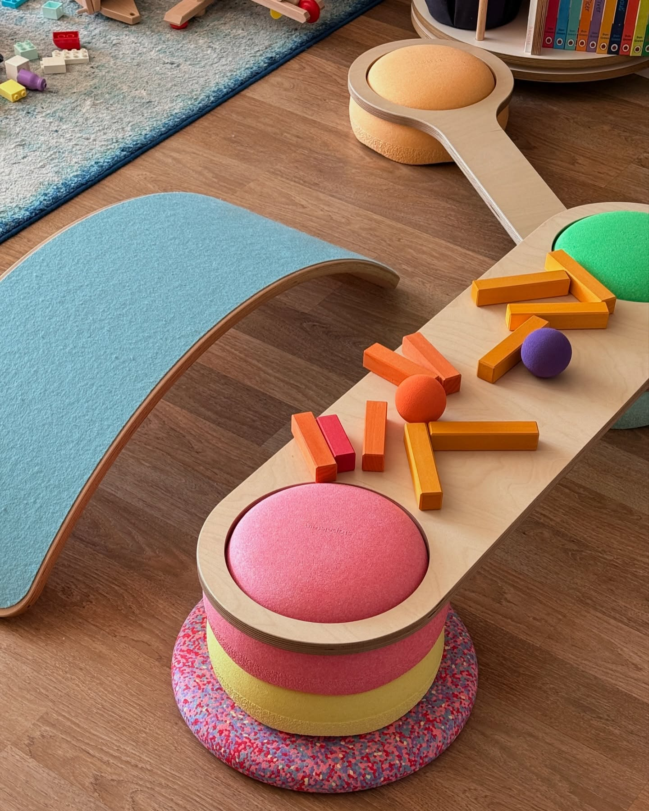
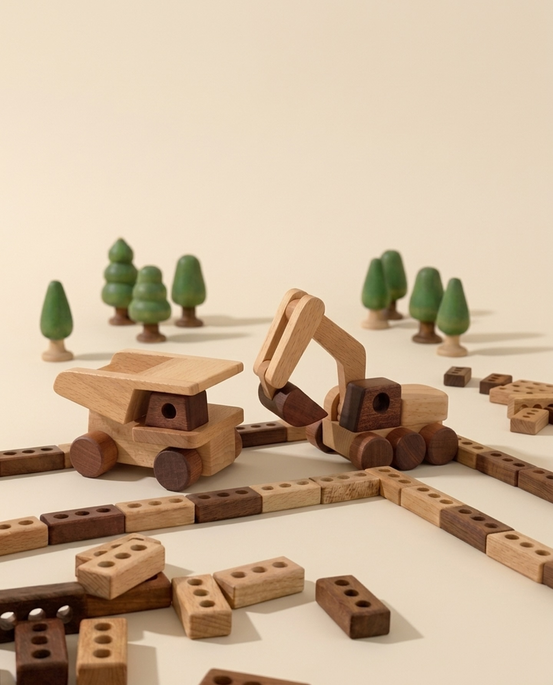

9:41
발달 리포트
2026.05 · WEEK 2
지호의 발달은
또래보다 활발한 편이에요
대근육과 사회성이 특히 잘 발달하고 있어요.
소근육은 꾸준한 활동으로 더 키울 수 있어요.
EXPERT
전문가 발달 리포트

김미정 박사
발달심리학 박사 · 영유아 발달 전문가
지호는 대근육과 사회성이 매우 활발하게 발달하고 있어요. 특히 신체 활동에서 자신감이 넘치는 모습이 인상적입니다.
소근육은 지금이 자극의 최적기예요. 찰흙 놀이나 끈 꿰기 같은 손가락을 활용하는 활동을 꾸준히 해주시면 빠르게 성장할 거예요.
강점: 대근육·사회성이 또래 대비 매우 활발하게 발달 중
집중 영역: 소근육 발달 — 주 3회 손 활동 권장
RECOMMENDED FOR JIHO
맞춤 교구 3가지

촉감 점토 세트

색깔 끈 꿰기 놀이

원목 링 쌓기 세트